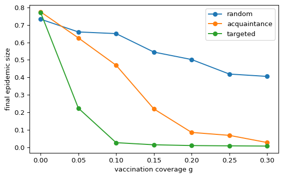

You have a limited number of vaccine doses. Which nodes should get them? On a heterogeneous network the answer matters much more than on a well-mixed population.
Three strategies
Random immunization. Vaccinate a fraction \(g\) of nodes chosen uniformly at random. In the heterogeneous mean-field picture this rescales the spreading rate to \(\lambda(1-g)\), so the epidemic stops when \(g > g_c = 1 - \lambda_c/\lambda\). For an infinite scale-free network with \(2 < \gamma \le 3\), \(\lambda_c \to 0\) and therefore \(g_c \to 1\): random vaccination would have to reach almost everyone (pastor2002immunization?).
Targeted immunization. Vaccinate the nodes with the highest degree. Removing hubs cuts \(\langle k^2 \rangle\) sharply, and a small fraction \(g\) is enough to restore a finite threshold (pastor2002immunization?). This needs the degree of every node, which you rarely know for a real population.
Acquaintance immunization. Pick a random node and vaccinate one of its random neighbours. A random neighbour has degree \(k\) with probability \(k p_k / \langle k \rangle\), so the method favours hubs without any global knowledge (cohen2003efficient?).
The three selection rules are in amlab.networks_spreading.
Core activity
Implement acquaintance immunization, then compare the final SIR epidemic size under the three strategies on a Barabási-Albert graph.
Prediction
Exercise
Rank the three strategies by the final epidemic size you expect at \(g = 0.1\). Where do you expect acquaintance immunization to fall?
Solution
Targeted immunization should give the smallest epidemic and random immunization the largest. Acquaintance immunization should fall in between: it reaches hubs more often than random selection, but less reliably than a list of the highest degrees. Figure 1 below confirms this ranking.
Implementation
Exercise
Complete acquaintance_immunization: pick a random node, then vaccinate one of its random neighbours, until fraction * N distinct nodes are chosen.
def acquaintance_immunization(G, fraction, rng):"""Return fraction * N distinct nodes chosen as random neighbours of random nodes.""" nodes =list(G.nodes()) k =int(round(fraction *len(nodes))) chosen =set()whilelen(chosen) < k: v =# TODO: a random node nbrs =list(G.neighbors(v))if nbrs:# TODO: add one random neighbour of v to chosenreturnlist(chosen)
Solution
Using a set makes the chosen nodes distinct: a hub that is named twice counts once.
def acquaintance_immunization(G, fraction, rng): nodes =list(G.nodes()) k =int(round(fraction *len(nodes))) chosen =set()whilelen(chosen) < k: v = nodes[rng.integers(len(nodes))] nbrs =list(G.neighbors(v))if nbrs: chosen.add(nbrs[rng.integers(len(nbrs))])returnlist(chosen)
Validation
Check the mean degree of the vaccinated nodes. Random selection should match the network mean up to sampling noise (with 100 nodes and a broad degree distribution, the noise is about \(\pm 0.6\)). Acquaintance selection should give a clearly higher value, and targeted selection the highest.
import networkx as nximport numpy as npfrom amlab.networks_spreading import ( acquaintance_immunization, random_immunization, run_sir_fast, targeted_immunization,)SEED =7rng = np.random.default_rng(SEED)G = nx.barabasi_albert_graph(1000, 3, seed=SEED)deg =dict(G.degree())print(f"network mean degree: {np.mean(list(deg.values())):.2f}")for name, chosen in [ ("random", random_immunization(G, 0.1, rng)), ("acquaintance", acquaintance_immunization(G, 0.1, rng)), ("targeted", targeted_immunization(G, 0.1)),]:print(f"{name:>12}: mean degree of vaccinated nodes = {np.mean([deg[v] for v in chosen]):.2f}")
network mean degree: 5.98
random: mean degree of vaccinated nodes = 7.35
acquaintance: mean degree of vaccinated nodes = 13.12
targeted: mean degree of vaccinated nodes = 20.59
Experiment
Figure 1 runs the discrete-time SIR model (\(\beta = 0.05\), \(\mu = 0.1\), 5 initial infected nodes) for each strategy and each coverage \(g\).

Figure 1: Mean final epidemic size (fraction of all nodes ever infected) against vaccination coverage g on a Barabási-Albert graph (N = 1000, m = 3). 20 runs per point.
How large must \(g\) be for each strategy to reduce the final size below 5%?
Acquaintance immunization uses only local information. How close does it get to the targeted strategy?
Is random vaccination useless on this network? Compare with the asymptotic statement \(g_c \to 1\) and remember that this graph is finite.
Solution
Targeted immunization needs \(g = 0.1\) (final size about 3%). Acquaintance immunization needs between \(g = 0.25\) and \(g = 0.3\). Random immunization never gets below 5% in the plotted range: at \(g = 0.3\) the final size is still about 40%.
It needs about two and a half to three times as many doses as the targeted strategy for the same effect, but it is far better than random selection at every coverage.
No. The final size falls steadily with \(g\), from about 73% to about 40% at \(g = 0.3\). On a finite graph \(\langle k^2 \rangle\) is finite, so \(g_c\) is below 1. It is still large, so random vaccination is the most expensive way to stop the epidemic.
Limitations
The graph is a model network with \(N = 1000\), not a real contact network.
Vaccination is perfect and permanent, and every vaccinated node is removed from the spreading process.
Targeted immunization assumes you know every degree exactly.
20 runs per point leave visible noise, especially near the threshold.
Optional extension
Exercise
Repeat the experiment on an Erdős-Rényi graph with the same mean degree. Does the choice of strategy still matter?
Target by betweenness instead of degree. Compare with the Motter-Lai trigger choice in Cascade Simulation.
Solution
Reuse G, rng, gs and strategies from the page. Swap the graph for an ER graph with \(p = 6/(N-1)\), and add a betweenness strategy.
On the ER graph the strategies are much closer. The degrees are nearly all similar, so there are no hubs to target. Targeted immunization still wins, but it needs \(g \approx 0.25\) to push the final size to about 5%, against \(g = 0.1\) on the BA graph. Acquaintance immunization is barely better than random selection.
On the BA graph the betweenness ranking performs almost as well as the degree ranking, because the hubs are also the nodes with the largest betweenness. The same overlap explains why the highest-load and highest-degree triggers give the same cascade on the BA graph of Cascade Simulation. On the ER graph degree and betweenness rankings differ more, and the degree ranking is the better choice here.
Exit question
Exercise
A health agency cannot map the contact network but can ask people to name one contact. Which strategy from this page can it implement, and why does it work better than vaccinating the people it first reaches?
Solution
Acquaintance immunization. It vaccinates the named contacts, not the people first reached. A named contact is a random neighbour, and random neighbours have degree \(k\) with probability proportional to \(k p_k\), so they are more often hubs (cohen2003efficient?). Vaccinating hubs lowers \(\langle k^2 \rangle\) and raises the epidemic threshold.
Source Code
---title: "Vaccination Strategies"subtitle: "Module 5: Complex Networks"format: html---You have a limited number of vaccine doses. Which nodes should get them? On a heterogeneous network the answer matters much more than on a well-mixed population.## Three strategies- **Random immunization.** Vaccinate a fraction $g$ of nodes chosen uniformly at random. In the heterogeneous mean-field picture this rescales the spreading rate to $\lambda(1-g)$, so the epidemic stops when $g > g_c = 1 - \lambda_c/\lambda$. For an infinite scale-free network with $2 < \gamma \le 3$, $\lambda_c \to 0$ and therefore $g_c \to 1$: random vaccination would have to reach almost everyone [@pastor2002immunization].- **Targeted immunization.** Vaccinate the nodes with the highest degree. Removing hubs cuts $\langle k^2 \rangle$ sharply, and a small fraction $g$ is enough to restore a finite threshold [@pastor2002immunization]. This needs the degree of every node, which you rarely know for a real population.- **Acquaintance immunization.** Pick a random node and vaccinate one of its random neighbours. A random neighbour has degree $k$ with probability $k p_k / \langle k \rangle$, so the method favours hubs without any global knowledge [@cohen2003efficient].The three selection rules are in `amlab.networks_spreading`.::: {.callout-important}## Core activityImplement acquaintance immunization, then compare the final SIR epidemic size under the three strategies on a Barabási-Albert graph.:::## Prediction::: {.callout-note}## ExerciseRank the three strategies by the final epidemic size you expect at $g = 0.1$. Where do you expect acquaintance immunization to fall?:::::: {.callout-tip collapse="true"}## SolutionTargeted immunization should give the smallest epidemic and random immunization the largest. Acquaintance immunization should fall in between: it reaches hubs more often than random selection, but less reliably than a list of the highest degrees. @fig-vaccination below confirms this ranking.:::## Implementation::: {.callout-note}## ExerciseComplete `acquaintance_immunization`: pick a random node, then vaccinate one of its random neighbours, until `fraction * N` distinct nodes are chosen.```pythondef acquaintance_immunization(G, fraction, rng):"""Return fraction * N distinct nodes chosen as random neighbours of random nodes.""" nodes =list(G.nodes()) k =int(round(fraction *len(nodes))) chosen =set()whilelen(chosen) < k: v =# TODO: a random node nbrs =list(G.neighbors(v))if nbrs:# TODO: add one random neighbour of v to chosenreturnlist(chosen)```:::::: {.callout-tip collapse="true"}## SolutionUsing a set makes the chosen nodes distinct: a hub that is named twice counts once.```pythondef acquaintance_immunization(G, fraction, rng): nodes =list(G.nodes()) k =int(round(fraction *len(nodes))) chosen =set()whilelen(chosen) < k: v = nodes[rng.integers(len(nodes))] nbrs =list(G.neighbors(v))if nbrs: chosen.add(nbrs[rng.integers(len(nbrs))])returnlist(chosen)```:::## ValidationCheck the mean degree of the vaccinated nodes. Random selection should match the network mean up to sampling noise (with 100 nodes and a broad degree distribution, the noise is about $\pm 0.6$). Acquaintance selection should give a clearly higher value, and targeted selection the highest.```{python}import networkx as nximport numpy as npfrom amlab.networks_spreading import ( acquaintance_immunization, random_immunization, run_sir_fast, targeted_immunization,)SEED =7rng = np.random.default_rng(SEED)G = nx.barabasi_albert_graph(1000, 3, seed=SEED)deg =dict(G.degree())print(f"network mean degree: {np.mean(list(deg.values())):.2f}")for name, chosen in [ ("random", random_immunization(G, 0.1, rng)), ("acquaintance", acquaintance_immunization(G, 0.1, rng)), ("targeted", targeted_immunization(G, 0.1)),]:print(f"{name:>12}: mean degree of vaccinated nodes = {np.mean([deg[v] for v in chosen]):.2f}")```## Experiment@fig-vaccination runs the discrete-time SIR model ($\beta = 0.05$, $\mu = 0.1$, 5 initial infected nodes) for each strategy and each coverage $g$.```{python}#| label: fig-vaccination#| fig-cap: "Mean final epidemic size (fraction of all nodes ever infected) against vaccination coverage g on a Barabási-Albert graph (N = 1000, m = 3). 20 runs per point."#| echo: falseimport matplotlib.pyplot as pltgs = np.linspace(0, 0.3, 7)strategies = {"random": lambda g: random_immunization(G, g, rng),"acquaintance": lambda g: acquaintance_immunization(G, g, rng),"targeted": lambda g: targeted_immunization(G, g),}fig, ax = plt.subplots(figsize=(6, 3.8))for name, select in strategies.items(): sizes = [ np.mean([run_sir_fast(G, 0.05, 0.1, initial_infected=5, immune=select(g), rng=rng) for _ inrange(20)])for g in gs ] ax.plot(gs, sizes, "o-", label=name)ax.set_xlabel("vaccination coverage g")ax.set_ylabel("final epidemic size")ax.legend()plt.tight_layout()plt.show()```## Interpretation::: {.callout-note}## ExerciseRead @fig-vaccination and answer:- How large must $g$ be for each strategy to reduce the final size below 5%?- Acquaintance immunization uses only local information. How close does it get to the targeted strategy?- Is random vaccination useless on this network? Compare with the asymptotic statement $g_c \to 1$ and remember that this graph is finite.:::::: {.callout-tip collapse="true"}## Solution- Targeted immunization needs $g = 0.1$ (final size about 3%). Acquaintance immunization needs between $g = 0.25$ and $g = 0.3$. Random immunization never gets below 5% in the plotted range: at $g = 0.3$ the final size is still about 40%.- It needs about two and a half to three times as many doses as the targeted strategy for the same effect, but it is far better than random selection at every coverage.- No. The final size falls steadily with $g$, from about 73% to about 40% at $g = 0.3$. On a finite graph $\langle k^2 \rangle$ is finite, so $g_c$ is below 1. It is still large, so random vaccination is the most expensive way to stop the epidemic.:::## Limitations- The graph is a model network with $N = 1000$, not a real contact network.- Vaccination is perfect and permanent, and every vaccinated node is removed from the spreading process.- Targeted immunization assumes you know every degree exactly.- 20 runs per point leave visible noise, especially near the threshold.## Optional extension::: {.callout-note}## Exercise- Repeat the experiment on an Erdős-Rényi graph with the same mean degree. Does the choice of strategy still matter?- Target by betweenness instead of degree. Compare with the Motter-Lai trigger choice in [Cascade Simulation](cascade-simulation.qmd).:::::: {.callout-tip collapse="true"}## SolutionReuse `G`, `rng`, `gs` and `strategies` from the page. Swap the graph for an ER graph with $p = 6/(N-1)$, and add a betweenness strategy.```pythonG_er = nx.erdos_renyi_graph(1000, 6/999, seed=SEED)def betweenness_ranking(G):"""Nodes sorted by decreasing betweenness (approximate, 200 sources).""" bc = nx.betweenness_centrality(G, k=200, seed=SEED)returnsorted(bc, key=bc.get, reverse=True)for graph, label in [(G, "BA"), (G_er, "ER")]: ranking = betweenness_ranking(graph) selectors = {"random": lambda g: random_immunization(graph, g, rng),"acquaintance": lambda g: acquaintance_immunization(graph, g, rng),"targeted": lambda g: targeted_immunization(graph, g),"betweenness": lambda g: ranking[: int(round(g * graph.number_of_nodes()))], }for name, select in selectors.items(): sizes = [ np.mean([run_sir_fast(graph, 0.05, 0.1, initial_infected=5, immune=select(g), rng=rng) for _ inrange(20)])for g in gs ]print(label, name, np.round(sizes, 2))```- On the ER graph the strategies are much closer. The degrees are nearly all similar, so there are no hubs to target. Targeted immunization still wins, but it needs $g \approx 0.25$ to push the final size to about 5%, against $g = 0.1$ on the BA graph. Acquaintance immunization is barely better than random selection.- On the BA graph the betweenness ranking performs almost as well as the degree ranking, because the hubs are also the nodes with the largest betweenness. The same overlap explains why the highest-load and highest-degree triggers give the same cascade on the BA graph of [Cascade Simulation](cascade-simulation.qmd). On the ER graph degree and betweenness rankings differ more, and the degree ranking is the better choice here.:::## Exit question::: {.callout-note}## ExerciseA health agency cannot map the contact network but can ask people to name one contact. Which strategy from this page can it implement, and why does it work better than vaccinating the people it first reaches?:::::: {.callout-tip collapse="true"}## SolutionAcquaintance immunization. It vaccinates the named contacts, not the people first reached. A named contact is a random neighbour, and random neighbours have degree $k$ with probability proportional to $k p_k$, so they are more often hubs [@cohen2003efficient]. Vaccinating hubs lowers $\langle k^2 \rangle$ and raises the epidemic threshold.:::